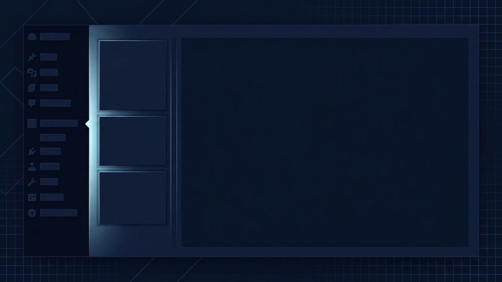

wp-admin Won't Load at All? Here's Where to Start.
The public site loads fine, but going to /wp-admin/ gives you a blank page, a timeout, or an error — before you even reach a login form to enter credentials. That's the key detail: this isn't a login problem, it's the admin area itself failing to build, and the fix path runs entirely through FTP or your host's file manager, not the dashboard you can't reach.

What is the problem?
This is specifically about wp-admin failing to build at all — a blank page, an endless loading spinner, a timeout, or a raw error — happening before you'd ever get the chance to enter a username and password. That's different from a login credentials or redirect problem, where you reach the login form fine and something goes wrong after submitting it, and different again from wp-admin loading but crawling, covered under wp-admin running slow.
Quick answer: the public site staying up while wp-admin fails almost always means a plugin, PHP resource limit, or corrupted admin-area file is the cause — not your hosting, DNS, or the front end of the site itself, all of which are clearly still working.
Because wp-admin loads considerably more code than the public site — every active plugin's admin-side functionality, dashboard widgets, and admin-only hooks — it's genuinely common for it to be the one thing that breaks while the front end keeps serving visitors normally.
Common symptoms
- Visiting
/wp-admin/shows a completely blank white page, with no error text visible - The page spins or loads indefinitely and eventually times out without ever rendering the dashboard
- A raw PHP error or a 500-style error appears specifically at
/wp-admin/, while the homepage and other public pages load normally - wp-login.php itself works and accepts the correct password, but the dashboard that should appear afterward fails to load
- It started right after installing or updating a plugin, changing PHP version, or a bulk plugin/theme update
- Some admin screens work while others (often ones tied to a specific plugin, like WooCommerce's order screen) fail specifically
Why does this happen?
Every wp-admin screen runs a much heavier code path than a public page: it loads WordPress core's admin functions, every active plugin's admin hooks and dashboard widgets, and often makes more database queries per page than the front end does. A plugin conflict, a PHP fatal error specific to an admin-only function, or a resource limit that the lighter front-end pages never approach can all break specifically in wp-admin while leaving the rest of the site untouched.
Because you can't necessarily reach the dashboard to disable a plugin through the normal interface, this is one of the few WordPress problems where working entirely through FTP or your host's File Manager isn't optional — it's the only practical way in.
Common technical causes
- A plugin fatal error occurring only in the admin context, common right after a plugin update introduces a bug in an admin-only function that the public-facing code never touches
- PHP memory or execution-time limit exhausted by the admin area's heavier load, even when the same limit is comfortable for the front end
- A corrupted core, plugin or theme file specific to an admin-area script, left behind by an interrupted update
- A security plugin or server firewall blocking or rate-limiting requests to
/wp-admin/specifically, sometimes after a false-positive detection - Too many active plugins competing for resources on shared hosting, where the admin area's combined weight is what finally tips over a shared ceiling
- A database table corruption or a missing table that a specific admin screen depends on to render, while public-facing queries avoid that table entirely
How to diagnose it
- Confirm the public site is genuinely fine — load the homepage and a few other pages to rule out a wider server-level issue before assuming this is admin-specific.
- Read the raw server error log via your host's control panel or, with SSH,
tail -f error_log, then reload/wp-admin/to capture the exact error live. - Enable WP_DEBUG temporarily by adding
define('WP_DEBUG', true); define('WP_DEBUG_LOG', true);towp-config.phpvia FTP, then checkwp-content/debug.logafter reproducing the issue. - Try wp-admin in a private/incognito window to rule out a browser extension or a stale admin-area cache.
- Rename the plugins folder via FTP (
wp-content/pluginsto something likeplugins-disabled) and try wp-admin again. If it loads, the cause is a plugin; rename it back and isolate plugins one at a time.
How to fix it, step by step
- Pull the exact error from the raw log or debug.log first — this tells you directly whether it's a plugin, a memory limit, or a missing file, rather than guessing.
- If a plugin was isolated as the cause, update it if a fix is available, or leave it deactivated (renamed back individually via FTP) until it can be replaced or fixed.
- Raise the PHP memory limit via
wp-config.php(define('WP_MEMORY_LIMIT', '256M');) or your host's PHP settings if a resource ceiling was the confirmed cause. - Restore a corrupted core, plugin or theme file from a clean copy or backup if the log points to a specific file left broken by an interrupted update.
- Whitelist
/wp-admin/access in your security plugin or firewall if that was found to be blocking requests, rather than disabling protection entirely. - If a database table issue was found, use phpMyAdmin's repair function on the affected table, taking a backup first.
- Reproduce the original steps once fixed and check the log again to confirm it's genuinely clear, not just visually resolved by a cache.
When this needs professional help
Reading the error log and renaming the plugins folder to isolate a plugin conflict are both realistic to try yourself. It's worth bringing in a developer when:
- You don't have FTP or File Manager access set up, or aren't comfortable editing
wp-config.phpdirectly - The error log points to a database issue that needs careful handling rather than a blind repair attempt
- The site needs to be back up quickly and you can't afford the time to isolate the cause through trial and error
- You've worked through the checklist above and wp-admin is still inaccessible
How I can help
Being locked out of wp-admin while the public site stays up is disorienting precisely because the normal troubleshooting tools live inside the thing that's broken. I work entirely through FTP and the server's own logs to find the exact cause — a plugin, a resource limit, a corrupted file — and restore access with the smallest possible change, so nothing else on the site gets disturbed in the process.